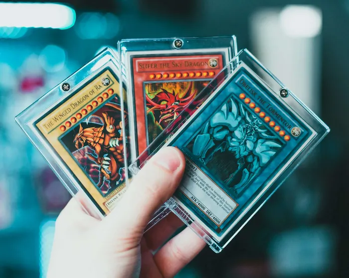
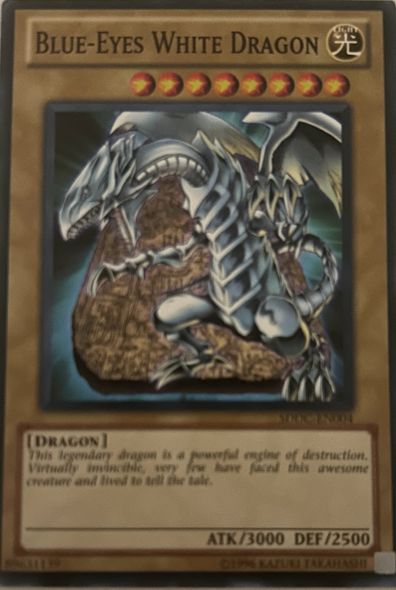

Welcome to the easiest way to search, explore, and save your favorite Yu-Gi-Oh trading cards. Whether you’re a competitive duelist or a casual collector, this site makes managing your card collection simple and fun. Press on Card Search up top where you will be able to search up and see all the cards in Yu-Gi-Oh. Then when you see one you want, you can save it to the Library where all of your cards will be stored. You can arrange, find ones to buy later, or anything else you want to do with them. Below are some of the cards that you can discover for yourself.
